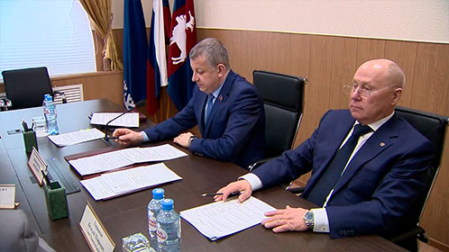
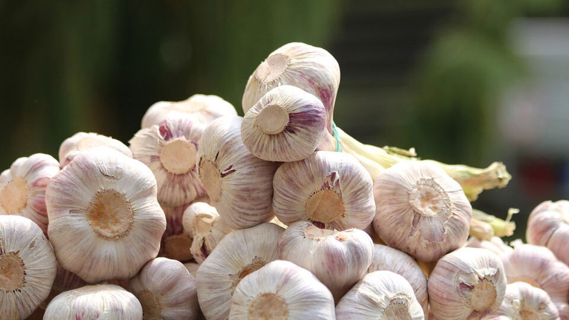

Поддержали проект
агробюджета
Поддержали проект
агробюджета
Вчера на заседании комитета ГД по
аграрным вопросам депутаты
рассмотрели и одобрили проект
федерального бюджета на 2024 год годов и
на плановый период 2025 и 2026
годов

Надежно по жизни дружить
с чесноком
Надежно по жизни дружить
с чесноком
Чесночная страда в огородах и на
дачных участках давно завершилась.
Но и в эти дни уместно вспомнить об
этом удивительном овоще, который
всегда есть в каждом доме